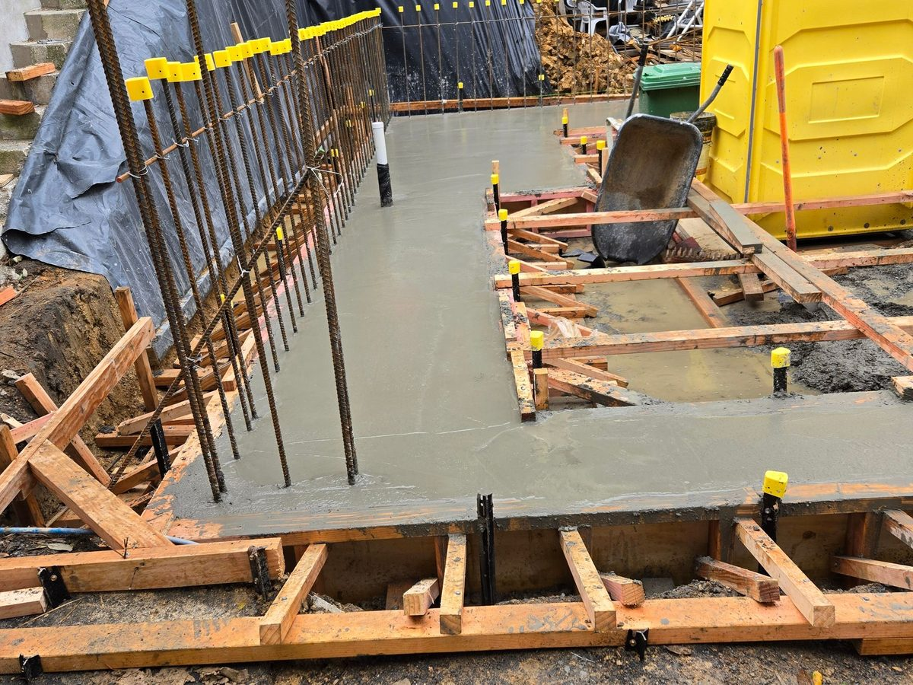
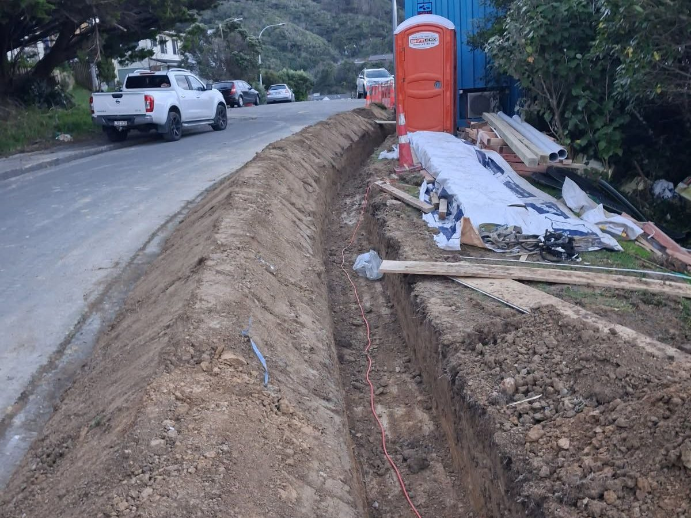

You get the machine and the person who runs it.
Wet hire means the digger or truck comes with an operator. You don't need a licence, a trailer or a weekend of practice. You tell us what you want dug, moved or carted, and we do it.
On a tight Wellington section that matters. An operator who knows the machine can work around fences, lawns, retaining and the neighbour's driveway without leaving damage behind. Because we also build driveways, walls and slabs, we dig to the levels the next trade actually needs.
Site prep to cartage, one booking.
What goes in the truck changes what it costs to tip.
Keep loads separate and you pay less, because mixed loads cost more to tip. Tip fees are passed through at cost.
Every job starts with a beforeUdig check.
beforeUdig is a free service that shows where power, gas, water, telecommunications and fibre run under or near your property. We request it before any digging, then confirm on site.
- Underground services located from the beforeUdig plans, and any private pipes or cables you know about.
- Access checked for gate widths, slopes, overhead lines and where the truck can park and load.
- Spoil plan agreed so you know what stays on site, what gets carted and where it's going.
Hourly rates for wet hire.
The machine size, access and how much needs carting set the final number. We'll recommend the right booking for the job.
Depends on the size of machine. Half-day and full-day rates for bigger jobs.
- Minimum charge applies
- Travel and cartage extra
Domestic cleanfill at Wellington's Southern Landfill (WCC). Mixed and demolition waste costs more.
- Passed through at cost
- Shown on your invoice
Indicative Wellington-region figures for 2026, GST inclusive. Not a quote. Truck cartage is priced per load or per hour, agreed before we start.
What you get when you book us.
- An experienced operator who knows the machine and works tidy.
- The right machine sized for your access and the job.
- A beforeUdig check before the bucket goes in.
- Loading and cartage in our own tip trucks.
- A clear price agreed before we start.
- A tidy site when we leave each day.
Recent digger and truck work.

Photo · Site prep for a new slab
Photo · Drainage trench Photo · Tip truck & cartage
Photo · Tip truck & cartage